(03) paint#
Motivation: host = chewie, device = cuda:1
Show code cell source
# HIDE CODE
import os, sys
from IPython.display import display
# tmp & extras dir
git_dir = os.path.join(os.environ['HOME'], 'Dropbox/git')
extras_dir = os.path.join(git_dir, 'jb-progress-2025/_extras')
fig_base_dir = os.path.join(git_dir, 'jb-progress-2025/figs')
tmp_dir = os.path.join(git_dir, 'jb-progress-2025/tmp')
# GitHub
sys.path.insert(0, os.path.join(git_dir, '_TemporalSC'))
from figures.convergence import plot_convergence
from main.config_defaults import default_configs
from figures.fighelper import *
from main.train import *
# warnings, tqdm, & style
warnings.filterwarnings('ignore', category=DeprecationWarning)
warnings.filterwarnings('ignore', category=FutureWarning)
warnings.filterwarnings('ignore', category=UserWarning)
from rich.jupyter import print
%matplotlib inline
set_style()
device_idx = 1
device = f'cuda:{device_idx}'
print(f"device: {device} ——— host: {os.uname().nodename}")
device: cuda:1 ——— host: chewie
Load model#
### k = 256
# a = 'poisson_Kyoto32-wht_t-16_b-8_k-256_m-8_s-3_<ngd|lin>'
# b = 'b100-ep1800-lr(0.001)_temp(0.05)_gr(200)_(2025_07_05,16:54)'
### k = 512
# a = 'poisson_Kyoto32-wht_t-16_b-8_k-512_m-4_s-6_<ngd|lin>'
# b = 'b100-ep1700-lr(0.001)_temp(0.05)_gr(200)_(2025_06_26,22:30)'
### k = 1024
a = 'poisson_Kyoto32-wht_t-16_b-8_k-1024_m-3_s-6_<ngd|lin>'
b = 'b100-ep1800-lr(0.001)_temp(0.05)_gr(200)_(2025_07_06,11:21)'
### load tr
tr, meta = load_model(pjoin(a, b), device)
meta['checkpoint']
1800
sanity check#
tr.model.show();
tr.model.show(method='abs-max');
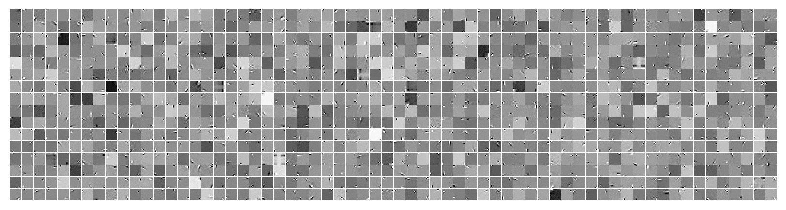
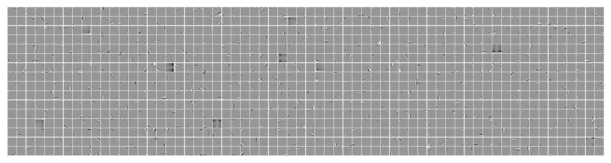
### Was: k = 512
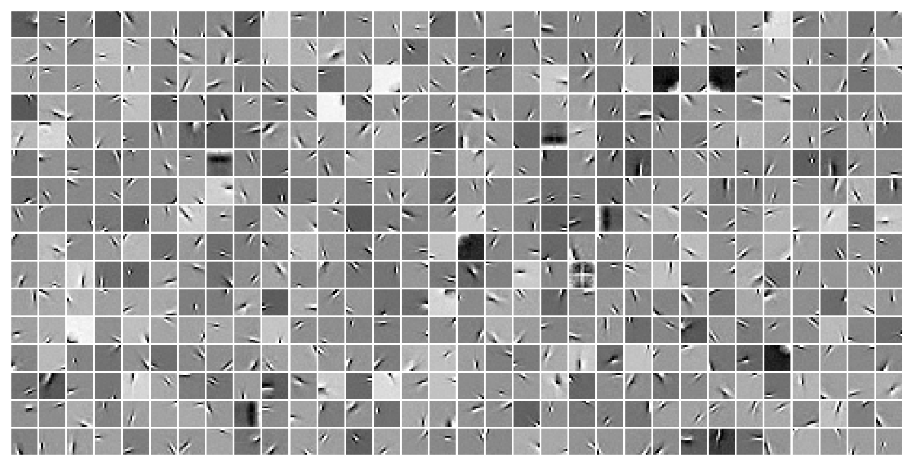
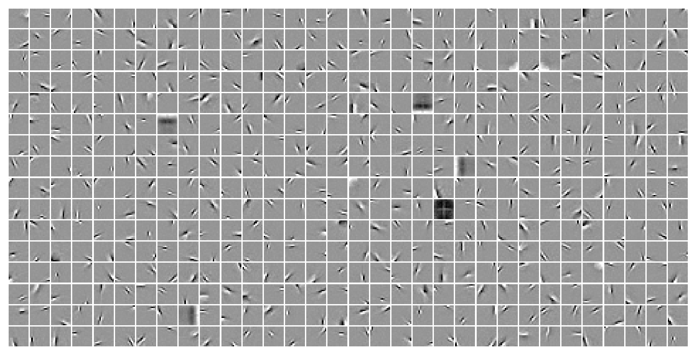
%%time
kws = dict(
t_total=1000,
n_data_batches=10,
compute_sprs=False,
)
results = tr.analysis('vld', **kws)
_ = plot_convergence(results, color='C0')
100%|█████████████████████████████████| 10/10 [00:38<00:00, 3.88s/it]
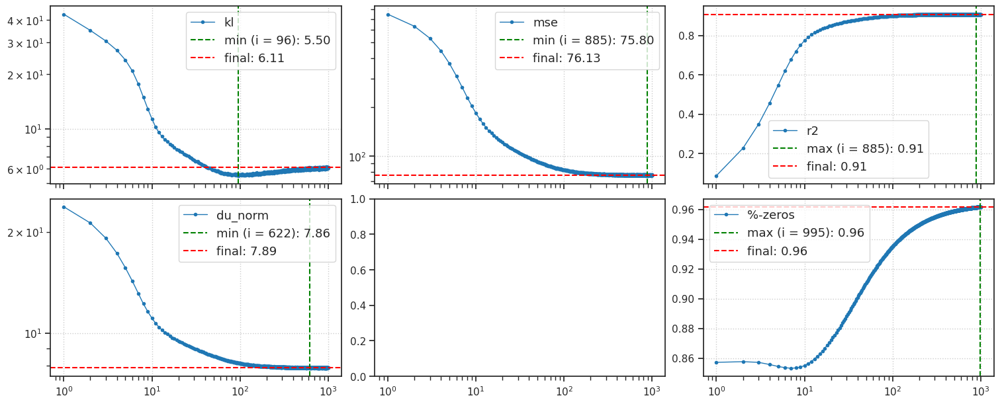
CPU times: user 57.4 s, sys: 18.1 s, total: 1min 15s
Wall time: 1min 15s
### Was: k = 512
100%|█████████████████████████████████| 10/10 [04:00<00:00, 24.10s/it]
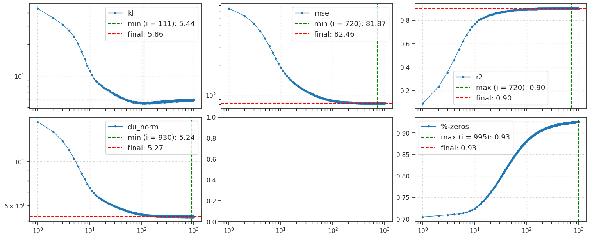
CPU times: user 4min 29s, sys: 9.19 s, total: 4min 38s
Wall time: 4min 38s
u0 = tonp(tr.model.layer.u_init[0].squeeze())
histplot(u0)
plt.show()
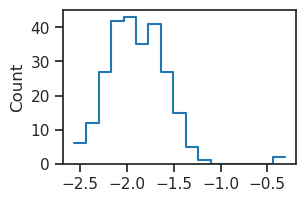
### Was: k = 512
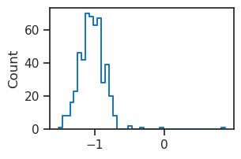
# reduce u0 to very negative values
tr.model.layer.u_init[0].data.fill_(-6.0);
%%time
kws = dict(
t_total=1000,
n_data_batches=10,
compute_sprs=False,
)
results = tr.analysis('vld', **kws)
_ = plot_convergence(results, color='C0')
100%|█████████████████████████████████| 10/10 [00:35<00:00, 3.51s/it]
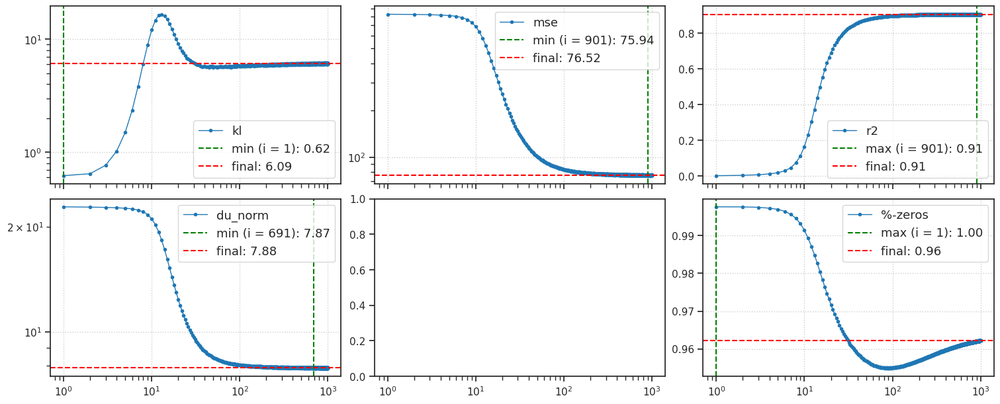
CPU times: user 56.4 s, sys: 15.2 s, total: 1min 11s
Wall time: 1min 11s
### Was: k = 512
100%|█████████████████████████████████| 10/10 [03:59<00:00, 23.92s/it]
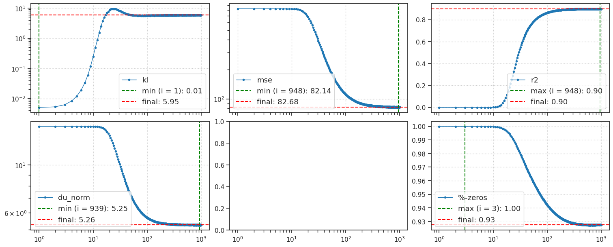
CPU times: user 4min 28s, sys: 7.94 s, total: 4min 36s
Wall time: 4min 36s
Load Kyoto image#
# root directory
root = 'Datasets/Kyoto/processed'
root = add_home(root)
# load bw
bw = np.load(pjoin(root, 'kyoto_bnw.npy'))
bw.shape
(62, 500, 500)
from utils.imgproc import do_process, Whitening
wht, *_ = do_process(tr.to(bw).unsqueeze(1), device=device, crop_size=0)
wht_shift_rescale = (wht - wht.mean()) / wht.std()
wht_shift_rescale *= tr.dl_trn.dataset.tensors[0].std()
wht_shift_rescale = tr.to(wht_shift_rescale)
wht_shift_rescale.shape
torch.Size([62, 1, 500, 500])
# change num latent pixels to accomodate new stim dim
tr.model.update_model_dims(
new_stim_dim=wht_shift_rescale.shape[-1],
new_stride=1,
)
# reduce u0 to very negative values
tr.model.layer.u_init[0].data.fill_(-5.0);
TODO:#
experiment with changing stride as well:
Change to stride = 1
Let’s have more latents, why not?
This corresponds to larger n_latent_pixels
How does recon change?
How does the patchiness of the recon change?
wht_shift_rescale = wht_shift_rescale[[58, 59]]
stimulus presentation#
crop = 2
n_frames_gray = 20
n_frames_stim = 280
t_total = n_frames_gray + n_frames_stim
gray_screen = torch.zeros_like(wht_shift_rescale)
items = [
'state', 'samples',
'recon', 'r2', 'mse',
]
all_lamb = []
all_spks = []
all_recon = []
r2 = np_nans((len(wht_shift_rescale), t_total))
mse_perdim = np_nans((len(wht_shift_rescale), t_total))
portion_zeros = np_nans((len(wht_shift_rescale), t_total))
tr.model.eval()
for t in tqdm(range(n_frames_gray + n_frames_stim)):
# set current time
tr.model.update_time(t)
# select current stimulus
if t < n_frames_gray:
current_frame = gray_screen
else:
current_frame = wht_shift_rescale
# xtract ftrs
output = tr.model.xtract_ftr(
x=current_frame,
return_extras=items,
)
# process: recon, mean firing rates & spike counts
_lamb = tonp(torch.exp(output['state'][0]).mean(-3))
_spks = tonp(output['samples'].mean(-3))
all_lamb.append(_lamb[:, crop:-crop, crop:-crop])
all_spks.append(_spks[:, crop:-crop, crop:-crop])
all_recon.append(tonp(output['recon'].squeeze()))
# save scores, r2, mse, sparsity
r2[:, t] = tonp(output['r2'])
mse_perdim[:, t] = (
1000 * tonp(output['mse']) /
np.prod(tr.model.cfg.input_sz)
)
portion_zeros[:, t] = tonp(torch.mean(
(output['samples'] == 0).float(),
dim=(1, 2, 3),
))
# stack into arrays
all_lamb = np.stack(all_lamb, axis=1)
all_spks = np.stack(all_spks, axis=1)
all_recon = np.stack(all_recon, axis=1)
all_lamb.shape, all_spks.shape, all_recon.shape
100%|█████████████████████████████████████████| 300/300 [01:18<00:00, 3.81it/s]
((2, 300, 477, 477), (2, 300, 477, 477), (2, 300, 500, 500))
img_idx = 0 # 58
r2[img_idx][-1]
0.8873547315597534
img = tonp(wht_shift_rescale[img_idx].squeeze())
vminmax = np.quantile(np.abs(img), q=0.97)
kws_img = dict(
vmin=-vminmax,
vmax=vminmax,
cmap='Greys_r',
)
kws_lamb = dict(
vmin=0.0,
vmax=np.quantile(all_lamb, q=0.99),
cmap='Spectral_r',
)
kws_spks = dict(
vmin=0.0,
vmax=np.quantile(all_spks, q=0.99),
cmap='Spectral_r',
)
kws_img
{'vmin': -1.0396006727218627, 'vmax': 1.0396006727218627, 'cmap': 'Greys_r'}
kws_lamb
{'vmin': 0.0, 'vmax': 0.00602206215262413, 'cmap': 'Spectral_r'}
import matplotlib.pyplot as plt
import matplotlib.animation as animation
import numpy as np
# Create figure
fig, axes = create_figure(2, 2, (8.9, 7.6))
# Initialize plots
ims = []
ims.append(axes[0, 0].imshow(all_lamb[img_idx, 0], **kws_lamb))
ims.append(axes[0, 1].imshow(all_spks[img_idx, 0], **kws_spks))
ims.append(axes[1, 0].imshow(all_recon[img_idx, 0], **kws_img))
ims.append(axes[1, 1].imshow(np.zeros_like(img), **kws_img))
# Add titles
current_r2 = max(0.0, r2[img_idx, 0]) * 100
current_percent_active = (1 - portion_zeros[img_idx, 0]) * 100
axes[0, 0].set_title(f'firing rates (avg across {tr.model.cfg.latent_channels} neurons)')
axes[0, 1].set_title(f'spike counts (avg) — active: {current_percent_active:0.1f} %')
axes[1, 0].set_title(f'reconstructed img — r2: {current_r2:0.1f} %')
axes[1, 1].set_title('input img')
title_2 = axes[0, 1].title
title_3 = axes[1, 0].title
title_4 = axes[1, 1].title
# Add colorbars
plt.colorbar(ims[0], ax=axes[0, 0], location='left')
plt.colorbar(ims[1], ax=axes[0, 1])
plt.colorbar(ims[2], ax=axes[1, 0], location='left')
plt.colorbar(axes[1, 1].images[0], ax=axes[1, 1])
remove_ticks(axes, False)
# Animation function
def animate(time_idx):
ims[0].set_data(all_lamb[img_idx, time_idx])
ims[1].set_data(all_spks[img_idx, time_idx])
ims[2].set_data(all_recon[img_idx, time_idx])
# Update dynamic titles
current_r2 = max(0.0, r2[img_idx, time_idx]) * 100
current_percent_active = (1 - portion_zeros[img_idx, time_idx]) * 100
title_2.set_text(f'spike counts (avg) — active: {current_percent_active:0.1f} %')
title_3.set_text(f'reconstructed img — r2: {current_r2:0.1f} %')
# Update input image and title color
if time_idx < n_frames_gray:
ims[3].set_data(np.zeros_like(img))
title_4.set_color('black')
else:
ims[3].set_data(img)
title_4.set_color('red')
return ims + [title_2, title_3, title_4]
# Create animation
anim = animation.FuncAnimation(
fig=fig,
func=animate,
frames=t_total,
interval=100,
blit=True,
)
# Save as MP4
fname = '_'.join([
f"z-{str(tr.model.cfg.latent_sz).replace(' ', '')}",
f"s-{tr.model.cfg.latent_stride}",
f"kyoto-{img_idx}",
])
anim.save(f'{fname}.mp4', writer='ffmpeg', fps=10, dpi=150)
plt.close()
fig, ax = create_figure()
ax.plot(r2[img_idx])
ax.set(ylim=(0, 1))
[(0.0, 1.0)]
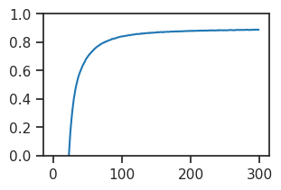
fig, ax = create_figure()
ax.plot(mse_perdim[img_idx])
#ax.set(ylim=(0, 1))
[<matplotlib.lines.Line2D at 0x7f06ed36e8d0>]
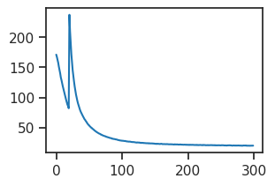
r2[img_idx][-1]
0.8873547315597534
Sparsity analysis#
output = tr.xtract_ftr(data_batch_sz=2000)
list(output)
100%|███████████████████████████████████| 2/2 [00:07<00:00, 3.93s/it]
['r2', 'mse', 'du_norm_0', 'samples', 'state_0', 'times']
z = output['samples'][:, -1]
z.shape
(2713, 512, 4, 4)
life, pop, portions = sparse_score(flatten_np(z, start_dim=1, end_dim=-1), cutoff=0.01)
life.mean(), pop.mean(), portions
(0.9572569,
0.95816654,
{'0': 92.6, '1': 2.2, '2': 1.5, '3': 1.0, '4': 0.7, '5+': 1.9})
histplot(life, label='lifetime', stat='density')
histplot(pop, label='population', stat='density')
plt.legend()
plt.show()
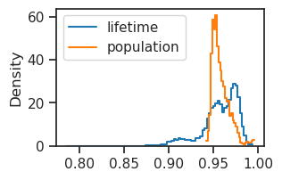
Load Kyoto image#
root = 'Datasets/Kyoto/processed'
root = add_home(root)
os.listdir(root)
['kyoto_bnw.npy', 'kyoto_color.npy']
bw = np.load(pjoin(root, 'kyoto_bnw.npy'))
bw.shape
(62, 500, 500)
img_i = 58
fig, ax = create_figure(1, 1, (4, 4))
ax.imshow(bw[img_i], cmap='Greys_r')
plt.show()
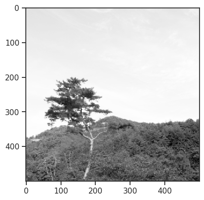
print({k: v for k, v in vars(tr.model.cfg).items() if 'latent' in k or 'input' in k})
{'latent_channels': 512, 'latent_pixels': 4, 'latent_stride': 6, 'input_sz': (1, 32, 32), 'latent_sz': (512, 4, 4)}
print(tr.model.layer.dec)
ConvDictionary(in_channels=512, out_channels=1, kernel_size=14, stride=6)
from base.helper import conv_arithmetic
df = conv_arithmetic(
input_size=None,
output_size=500,
kernel_size=14,
stride=6,
padding=0,
deconv=True,
)
df
| mode | computed | parameter | value | |
|---|---|---|---|---|
| 0 | deconv | True | input_size | 82 |
| 1 | deconv | False | output_size | 500 |
| 2 | deconv | False | kernel_size | 14 |
| 3 | deconv | False | stride | 6 |
| 4 | deconv | False | padding | 0 |
df.loc[df['computed']]
| mode | computed | parameter | value | |
|---|---|---|---|---|
| 0 | deconv | True | input_size | 82 |
latent_pixels = df.loc[df['parameter'] == 'input_size', 'value'].item()
latent_pixels
82
tr.model.cfg.latent_pixels = latent_pixels
tr.model.cfg.latent_sz = (tr.model.cfg.latent_channels, latent_pixels, latent_pixels)
tr.model.cfg.input_sz = (1, 500, 500)
tr.model.layer.dec_log_sigma = nn.Parameter(
torch.zeros((1, 1, 500, 500), device=tr.device).float(),
requires_grad=False,
)
print({k: v for k, v in vars(tr.model.cfg).items() if 'latent' in k})
{'latent_channels': 512, 'latent_pixels': 82, 'latent_stride': 6, 'latent_sz': (512, 82, 82)}
results = tr.xtract_ftr(
data=tr.to(bw).unsqueeze(1),
t_total=2000,
save_freq=200,
return_recon=True,
)
list(results)
100%|██████████████████████████████████| 1/1 [02:13<00:00, 133.66s/it]
['r2', 'mse', 'du_norm_0', 'samples', 'state_0', 'recon', 'times']
plot(results['r2'])
plt.show()
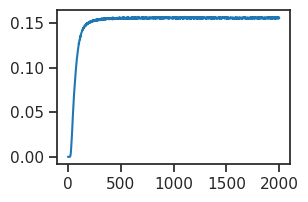
z = results['samples'][:, -1]
z.shape
(62, 512, 82, 82)
fig, ax = create_figure(1, 1, (5, 4))
im = ax.imshow(tonp(z[img_i].mean(0)), cmap='Spectral_r')
plt.colorbar(im, ax=ax)
plt.show()
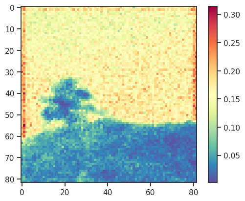
results['recon'].shape
(62, 11, 1, 500, 500)
img_i
58
fig, axes = create_figure(1, 3, (9, 3), 'all', 'all')
x2p = tonp(results['recon'][img_i, 1].squeeze())
axes[0].imshow(x2p, cmap='Greys_r')
x2p = tonp(results['recon'][img_i, -1].squeeze())
axes[1].imshow(x2p, cmap='Greys_r')
axes[-1].imshow(bw[img_i], cmap='Greys_r')
plt.show()
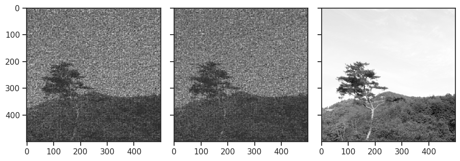
from utils.imgproc import do_process, Whitening
x_wt, x_wt_cn, x_wt_cn_zs = do_process(tr.to(bw).unsqueeze(1), crop_size=0)
x_wt_cn_zs.shape
torch.Size([62, 1, 500, 500])
imshow(tonp(x_wt[img_i, 0]), cmap='Greys_r')
plt.show()
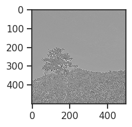
whitener = Whitening((500, 500), f_0=0.5, n=4, batched=True)
wht = whitener(tr.to(bw).unsqueeze(1))
wht.shape
torch.Size([62, 1, 500, 500])
fig, ax = create_figure(1, 1, ( 5, 5))
ax.imshow(tonp(wht[img_i, 0]), cmap='Greys_r')
plt.show()
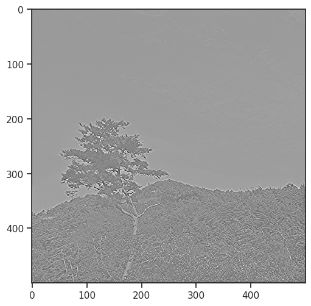
histplot(tr.dl_trn.dataset.tensors[0][:1000].ravel())
plt.show()
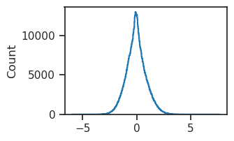
histplot(bw.ravel())
plt.show()
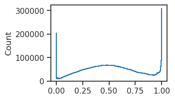
histplot(wht.ravel())
plt.show()
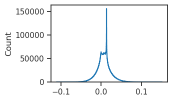
wht_shift_rescale = (wht - wht.mean()) / wht.std()
wht_shift_rescale *= tr.dl_trn.dataset.tensors[0].std()
wht_shift_rescale.shape
torch.Size([62, 1, 500, 500])
histplot(wht_shift_rescale.ravel())
plt.show()
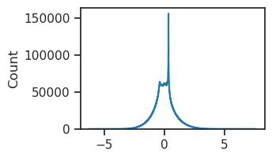
results = tr.xtract_ftr(
data=tr.to(wht_shift_rescale),
t_total=200,
save_freq=1,
return_recon=True,
)
list(results)
0%| | 0/1 [00:00<?, ?it/s]
plot(results['r2'])
plt.show()
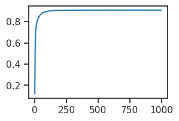
results['recon'].shape
(62, 11, 1, 500, 500)
fig, axes = create_figure(1, 3, (9, 3), 'all', 'all')
x2p = tonp(results['recon'][img_i, 1].squeeze())
axes[0].imshow(x2p, cmap='Greys_r')
x2p = tonp(results['recon'][img_i, -1].squeeze())
axes[1].imshow(x2p, cmap='Greys_r')
axes[-1].imshow(tonp(wht[img_i, 0]), cmap='Greys_r')
plt.show()
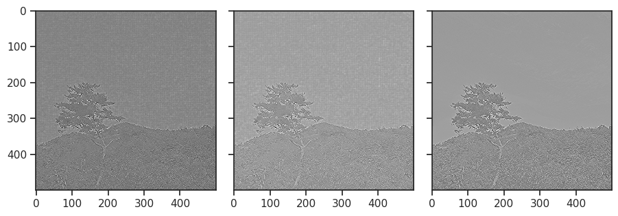
plot(results['r2'])
---------------------------------------------------------------------------
NameError Traceback (most recent call last)
Cell In[1], line 1
----> 1 plot(results['r2'])
NameError: name 'plot' is not defined
results['r2'][-1]
0.90920043
results['r2'][200]
0.9066059
Analyze#
sort data#
x_vld = tr.dl_vld.dataset.tensors[0]
var = torch.var(x_vld, dim=(1, 2, 3))
contrast_sort = torch.argsort(var)
x_vld = x_vld[contrast_sort]
tr.dl_vld.dataset.tensors = (x_vld, )
plot#
High contrast:#
x2p = tonp(tr.dl_vld.dataset.tensors[0])[-120:]
plot_weights(x2p, nrows=6, dpi=300, method='abs-max');
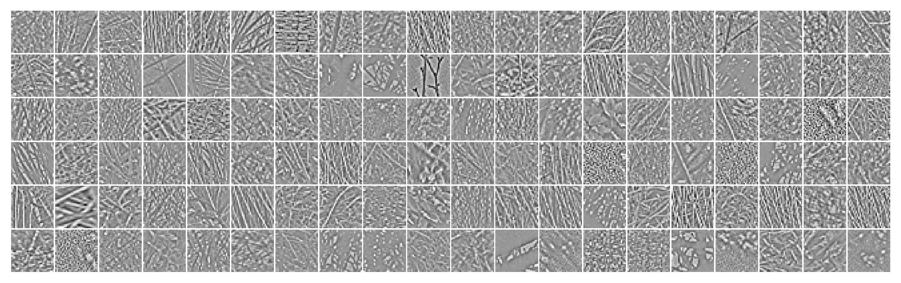
Low contrast:#
x2p = tonp(tr.dl_vld.dataset.tensors[0])[:120]
plot_weights(x2p, nrows=6, dpi=300, method='abs-max');
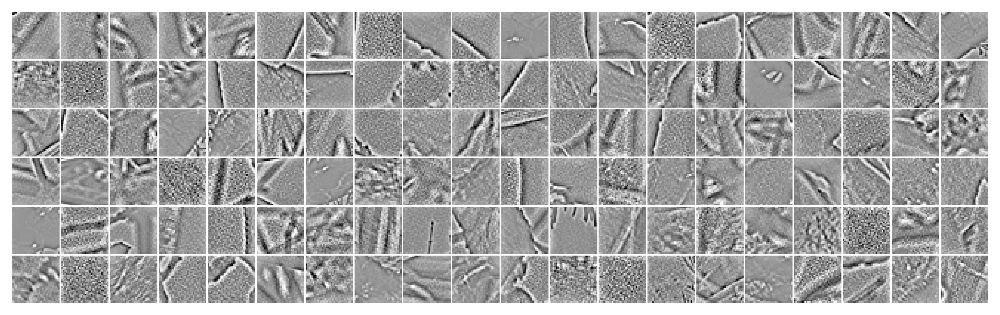
Xtract ftrs#
results = tr.analysis(t_total=111, n_data_batches=-1, avg_samples=False)
list(results)
100%|███████████████████████████████| 114/114 [00:48<00:00, 2.35it/s]
['kl',
'r2',
'mse',
'loss',
'du_norm',
'lifetime',
'population',
'%-zeros',
'state_final',
'samples_final']
var.shape, results['r2'][:, -1].shape
(torch.Size([11303]), (11303,))
sp_stats.spearmanr(tonp(var), results['r2'][:, -1])
SignificanceResult(statistic=-0.010619488995188308, pvalue=0.25892990834104573)
r2_last = results['r2'][:, -1]
r2_last.shape
(11303,)
r2_last[:200].mean(), r2_last[-200:].mean()
(0.8733722, 0.90817565)
histplot(r2_last[:100], color='C0')
histplot(r2_last[-100:], color='C1')
plt.show()
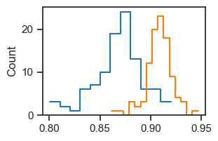
tr.model.layer.samples.shape
torch.Size([3, 256, 8, 8])
z = tonp(tr.model.layer.samples[2])
z.shape
(256, 8, 8)
plt.imshow(z.mean(0))
plt.show()
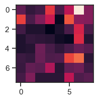
plt.imshow(z[14])
plt.colorbar()
plt.show()
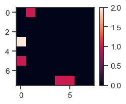
portions = sparse_score(z.ravel(), cutoff=0.01)[-1]
/home/hadi/Dropbox/git/_TemporalSC/analysis/sparse.py:15: RuntimeWarning: divide by zero encountered in divide
score /= (1 - 1 / m)
/home/hadi/Dropbox/git/_TemporalSC/analysis/sparse.py:15: RuntimeWarning: invalid value encountered in divide
score /= (1 - 1 / m)
portions
{'0': 93.5, '1': 3.9, '2': 1.1, '3': 0.6, '4+': 0.9}
histplot(z.ravel())
plt.show()
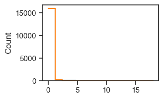